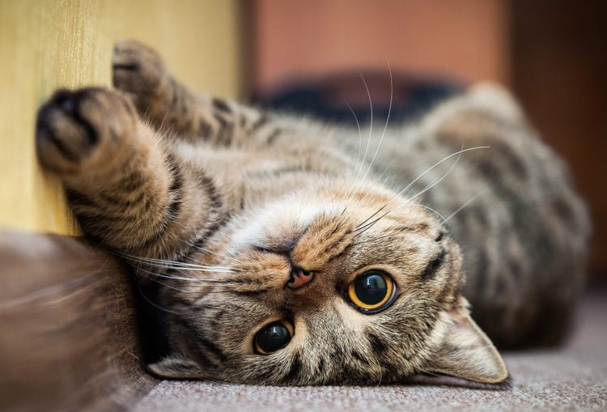

Cats and dogs have been beloved pets for generations, and choosing between them often sparks friendly debates among animal lovers. This page takes a fun and lighthearted look at some of the reasons people prefer cats, from their independent nature to their unique personalities. While the comparison is playful, it highlights the qualities that make cats such fascinating and lovable companions.
Cats are more independent than dogs.
Cats generally require less daily effort.
Cats adapt well to indoor living.
Cats create a calm environment.
Every cat has its own charm.
Living with cats may have positive effects.
Of course, dogs are wonderful pets too. They are known for their loyalty, enthusiasm, and ability to form strong bonds with their owners. Many people appreciate dogs for their trainability, protective instincts, and eagerness to join their owners in daily activities. Although this page focuses on the advantages of cats, there's no denying that dogs have earned their place as one of the world's most cherished companions.
Cats offer a unique combination of independence, low maintenance, and charming personalities that make them excellent companions for many people. Their ability to adapt to different living environments, provide comfort through their calm presence, and entertain with their playful behavior are just a few reasons why so many people prefer them. While dogs certainly have their own strengths and loyal qualities, cats stand out as affectionate, fascinating, and easy-to-care-for pets. Ultimately, the best pet depends on a person's lifestyle, but for many, cats are the perfect choice.
More cats